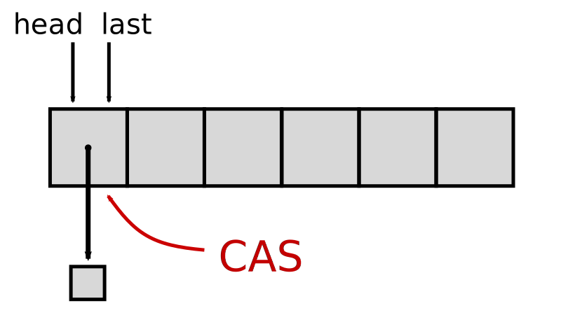
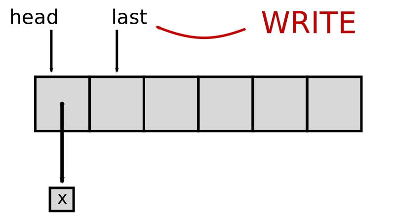
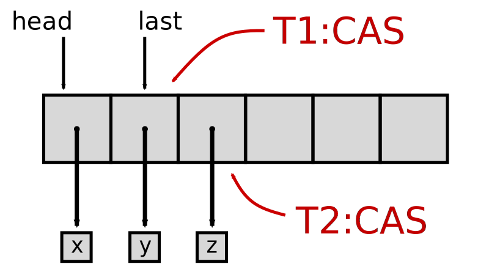
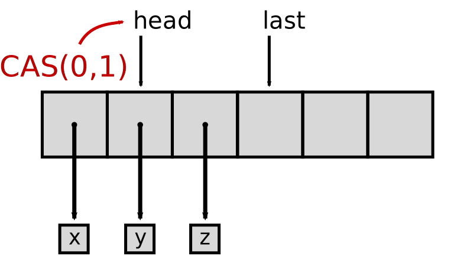
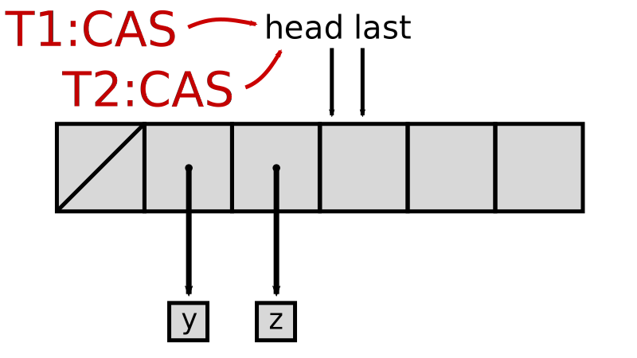

SnapQueue
Lock-Free Queue with Constant Time Snapshots
Aleksandar Prokopec / @alexprokopec

Single-Shot Queues
head- position of the first element in the queuelast- position less than or equal to the first empty entry
Single-Shot Queues - Enqueue
  Single-Shot Queues - Dequeue
 Correctness
- Every array entry is initially
null, then some element, and finally the special valueREMOVED - The numbers in
headincrease monotonically from 0 until the array length
Eventual Correctness
- Assuming no contention,
lasteventually points to the first empty entry - Eventually, the reference to the removed element is released